Basics: making and using bathymetric maps with marmap2
Source:vignettes/articles/basics.Rmd
basics.RmdIntroduction
marmap2 provides tools for importing, transforming and
plotting bathymetric and hypsometric data in R. It keeps the main
workflow close to modern R habits: data are returned as tidy long tables
by default, can be manipulated with pipes, and can be plotted with
ggplot2. Compatibility with the historical bathy matrix
format is still available when older marmap code needs it.
In this vignette, we will download bathymetric grids, inspect and simplify them, build maps one layer at a time, compare bathymetric colour scales, work around the Pacific antimeridian, project a Mediterranean grid, regularise irregularly spaced soundings, and convert bathymetric data to other spatial formats.
A Quick Tutorial
The examples below use several regions with contrasted topography and bathymetry: the Alboran Sea, the Mediterranean Sea, the Aleutian arc and a set of irregularly spaced Hudson Bay soundings. The download commands are shown exactly as they would be used in an interactive R session.
Getting Data Into R
The simplest way to get data into marmap2 is to request
a geographic window from either GEBCO or NOAA.
GEBCO currently returns its native 15 arc-second grid. This is a good
source when a detailed local map is needed.
For detailed maps covering limited areas, NOAA data can be loaded at
a resolution comparable to GEBCO. For maps covering large geographic
extents, the resolution argument of get_noaa()
can be used to request a coarser grid and avoid (down)loading
unnecessarily large datasets. The resolution argument is
expressed in arc-minutes. The highest resolutions are obtained with
resolution = 0.25 (0.25 arc-minutes, equivalent to 15
arc-seconds).
Both get_gebco() and get_noaa() provide a
keep argument to store a local copy of the downloaded data
in the working directory. This helps avoid repeated requests to the NOAA
and GEBCO servers when the same dataset is used several times.
The workflow remains unchanged: when data are requested with either
function, the working directory is checked first. If the corresponding
dataset is already available locally, this copy is loaded directly;
otherwise, the data are downloaded from the online source. The directory
used to save and retrieve local files can be specified with the
path argument of both functions.
summarise_bathy() can be used to print useful
information about the imported data.
head(alboran)
# A tibble: 6 × 3
lon lat depth
<dbl> <dbl> <dbl>
1 -6.00 37.0 6
2 -5.99 37.0 3
3 -5.99 37.0 2
4 -5.99 37.0 2
5 -5.98 37.0 8
6 -5.98 37.0 25
summarise_bathy(alboran)
Bathymetric data summary
Class: tbl_df/tbl/data.frame
Dimensions: 1440 longitude x 480 latitude (691200 cells)
Longitude: 5.998 W to 0.002083 W
Latitude: 35 N to 37 N
Resolution: 0.25 x 0.25 arc-minutes
Depth: -2746 to 2849 (mean -604.3, median -359)
Missing: 0
Memory: 15.8 Mb
summarise_bathy(medit)
Bathymetric data summary
Class: tbl_df/tbl/data.frame
Dimensions: 637 longitude x 240 latitude (152880 cells)
Longitude: 5.967 W to 36.47 E
Latitude: 30.03 N to 45.97 N
Resolution: 4.003 x 4.003 arc-minutes
Depth: -5043 to 3325 (mean -347.7, median 69.19)
Missing: 0
Memory: 3.5 MbIf you have already downloaded a high-resolution grid but only need a
lighter object for mapping or computation, you can reduce the resolution
locally with reduce_bathy_resolution(). This is preferable
to sending repeated queries for the same area to a remote server. As in
get_noaa(), the resolution argument is expressed in
arc-minutes, and the method argument specifies how values
in the coarser grid are derived from the finer grid: nearest-cell value
(default), mean value, or median value.
alboran_5 <- reduce_bathy_resolution(
alboran,
resolution = 5
)
summarise_bathy(alboran_5)
Bathymetric data summary
Class: tbl_df/tbl/data.frame
Dimensions: 71 longitude x 23 latitude (1633 cells)
Longitude: 5.956 W to 0.1229 W
Latitude: 35.04 N to 36.88 N
Resolution: 5 x 5 arc-minutes
Depth: -2720 to 1919 (mean -618.6, median -379)
Missing: 0
Memory: 39.4 KbBoth get_noaa() and get_gebco() return a
tibble by default. class = "bathy" can be used to return a
legacy bathy matrix. A tibble can also be converted to a legacy bathy
matrix with tbl_to_bathy() after import.
Plotting Bathymetric Data
A first map can be produced in one line.
quickplot_bathy() is meant for data inspection just after
downloading or transforming a grid.
quickplot_bathy(alboran)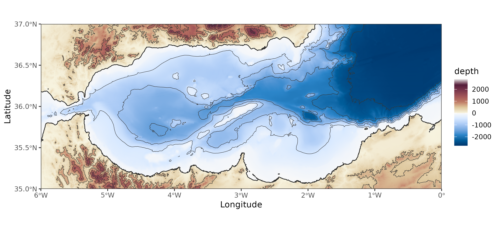
quickplot_bathy(alboran_5)
quickplot_bathy(medit)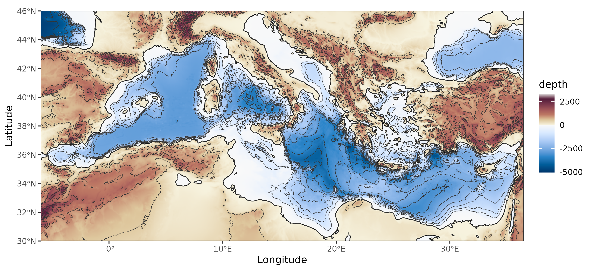
The same maps can be built layer by layer. geom_bathy()
draws the bathymetric raster, geom_coastline() draws the 0
m contour, and geom_contour() can add isobaths and
elevation contours. The manual appraoch allows for finer control over
the appearance of each layer and the overall map. The example below
shows a detailed map of the Alboran Sea, with bathymetry, coastline,
isobaths every hundred meters and elevation contours every 500
meters.
alboran |>
ggplot() +
geom_bathy(expand = FALSE) +
geom_coastline(linewidth = 0.45) +
geom_contour(
aes(lon, lat, z = depth),
breaks = seq(0, -3000, by = -100),
colour = "grey25",
linewidth = 0.18
) +
geom_contour(
aes(lon, lat, z = depth),
breaks = seq(0, 3000, by = 500),
colour = "grey25",
linewidth = 0.18
) +
scale_fill_bathy(
palette_ocean = "ocean_blues",
palette_land = "land_hcl"
) +
theme_bw()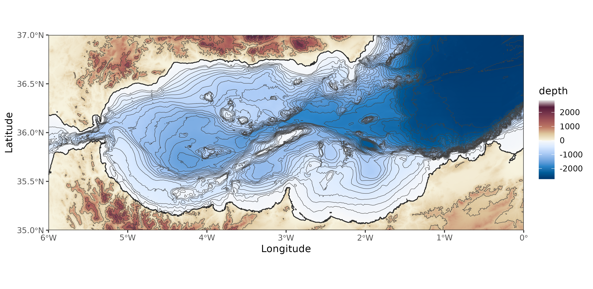
The palette system is deliberately simple: provide one palette for
the ocean and one for land. A palette can be one of the built-in names
(try bathy_palettes() for the full list), a vector of
colours, a palette function, or a single colour. This makes it possible
to use the palettes shipped with marmap2, palettes from
other R packages, base R HCL palettes, or hand-made gradients. The only
important rule is to choose ocean and land palettes that work together
visually and remain ordered from deep to shallow water, and from low to
high elevation.
Here is the Alboran Sea with two palettes shipped with
marmap2.
alboran |>
ggplot() +
geom_bathy(expand = FALSE) +
geom_coastline(linewidth = 0.4) +
scale_fill_bathy(
palette_ocean = "ocean_mako",
palette_land = "land_earth",
mode = "rescale"
) +
labs(title = "Built-in marmap2 palettes") +
theme_bw()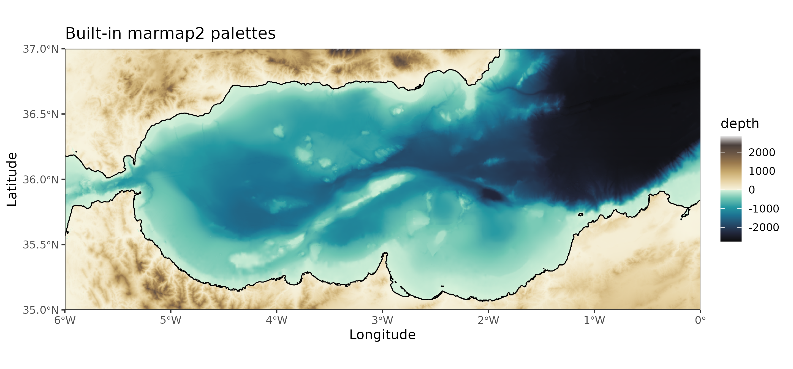
The same function can use colour-generating functions. The next
example uses base R HCL palettes through
grDevices::hcl.colors().
alboran |>
ggplot() +
geom_bathy(expand = FALSE) +
geom_coastline(linewidth = 0.4) +
scale_fill_bathy(
palette_ocean = function(n) grDevices::hcl.colors(n, "Blues 3"),
palette_land = function(n) grDevices::hcl.colors(n, "Terrain 2"),
mode = "rescale"
) +
labs(title = "Base R HCL palettes") +
theme_bw()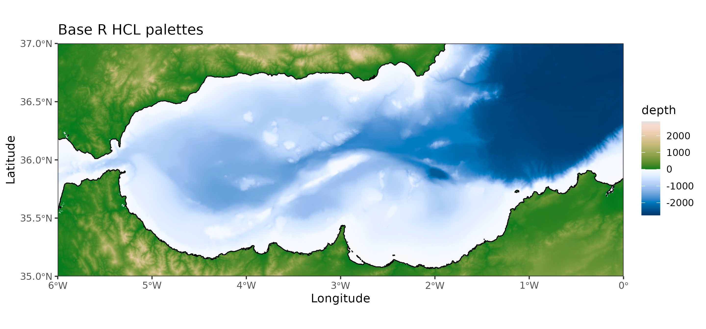
The same approach can mimic well-known perceptual palettes without
adding runtime dependencies. Here, two HCL palettes are turned into
explicit colour vectors before being passed to
scale_fill_bathy().
ocean_viridis_like <- grDevices::hcl.colors(9, "Viridis")
land_ylorbr_like <- grDevices::hcl.colors(9, "YlOrBr")
alboran |>
ggplot() +
geom_bathy(expand = FALSE) +
geom_coastline(linewidth = 0.4) +
scale_fill_bathy(
palette_ocean = ocean_viridis_like,
palette_land = land_ylorbr_like,
mode = "rescale"
) +
labs(title = "Dependency-free HCL colour vectors") +
theme_bw()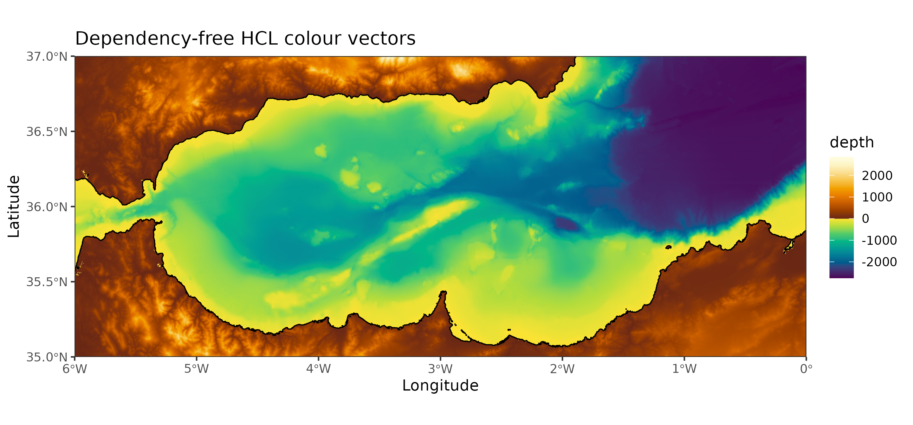
Finally, a palette can be created manually from colour vectors. This is useful when preparing several figures that need a specific visual identity.
alboran |>
ggplot() +
geom_bathy(expand = FALSE) +
geom_coastline(linewidth = 0.4) +
scale_fill_bathy(
palette_ocean = c("#081D58", "#225EA8", "#41B6C4", "#C7E9B4", "#F7FCF0"),
palette_land = c("#F6E8C3", "#D8B365", "#8C510A", "#4D2D17"),
mode = "rescale"
) +
labs(title = "Manual ocean and land gradients") +
theme_bw()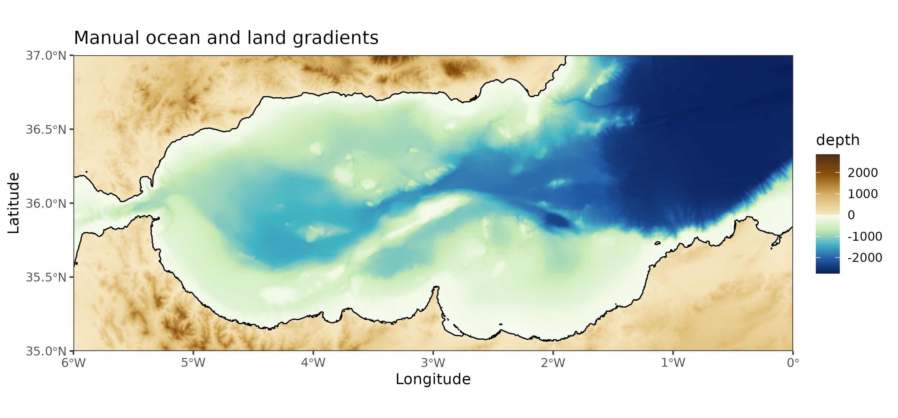
The mode argument controls how colours are assigned to
depth and elevation values. With mode = "truncate", colours
remain anchored to fixed reference depths and elevations: the same depth
keeps the same colour across different maps. The reference can be
supplied manually with a numeric vector, or more simply with a
bathymetric object through the reference_limits argument.
With mode = "rescale", the complete palette is stretched
over the range of the plotted data, which maximises local contrast but
makes colours less directly comparable between maps.
The Mediterranean map below defines the regional reference. Because
reference_limits = medit, the complete palette is used
across the depth and elevation range of the Mediterranean dataset.
medit |>
ggplot() +
geom_bathy(expand = FALSE) +
geom_coastline(linewidth = 0.35) +
geom_contour(
aes(lon, lat, z = depth),
breaks = seq(0, -5000, by = -500),
colour = "grey20",
linewidth = 0.14
) +
scale_fill_bathy(
palette_ocean = "ocean_blues",
palette_land = "land_earth",
mode = "truncate",
reference_limits = medit
) +
labs(title = "Mediterranean Sea, regional reference") +
theme_bw()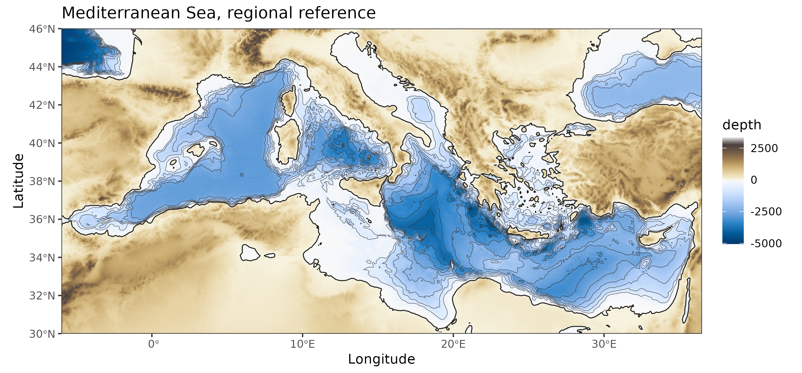
The two Alboran maps use the same palettes but different modes. In truncate mode, the Alboran colours match the Mediterranean colours for the same depths. In rescale mode, the full palette is used within the local depth range of the Alboran Sea.
alboran |>
ggplot() +
geom_bathy(expand = FALSE) +
geom_coastline(linewidth = 0.4) +
geom_contour(
aes(lon, lat, z = depth),
breaks = seq(0, -3000, by = -250),
colour = "grey20",
linewidth = 0.16
) +
scale_fill_bathy(
palette_ocean = "ocean_blues",
palette_land = "land_earth",
mode = "truncate",
reference_limits = medit
) +
labs(title = "Alboran Sea, truncate mode, Mediterranean reference") +
theme_bw()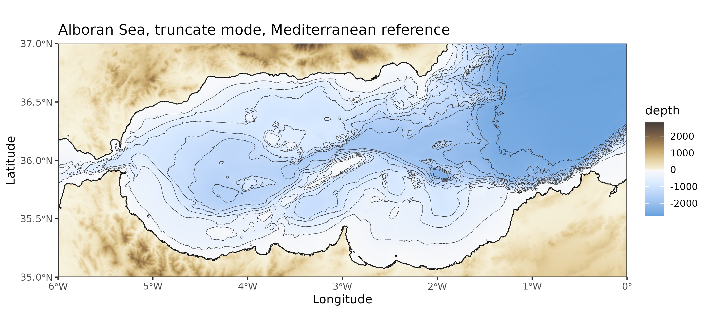
alboran |>
ggplot() +
geom_bathy(expand = FALSE) +
geom_coastline(linewidth = 0.4) +
geom_contour(
aes(lon, lat, z = depth),
breaks = seq(0, -3000, by = -250),
colour = "grey20",
linewidth = 0.16
) +
scale_fill_bathy(
palette_ocean = "ocean_blues",
palette_land = "land_earth",
mode = "rescale"
) +
labs(title = "Alboran Sea, rescale mode") +
theme_bw()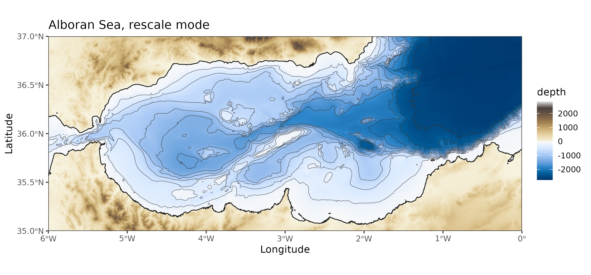
For a contour-only map, you can use scale_colour_bathy()
with the levels computed by geom_contour() to color code
isobaths or elevation contours. In the example below,
geom_bathy() is still used to draw the geographic
background and land mask, but the ocean fill is made transparent. The
depth information is carried only by the contour lines.
alboran |>
ggplot(aes(lon, lat, z = depth)) +
geom_bathy(expand = FALSE, show.legend = FALSE) +
geom_contour(
aes(colour = after_stat(level)),
breaks = seq(-2500, 0, by = 500),
linewidth = 0.5
) +
geom_coastline() +
scale_fill_bathy(
palette_ocean = "transparent",
palette_land = "grey80",
mode = "rescale",
name = "depth"
) +
scale_colour_bathy(
palette_ocean = "ocean_blues",
palette_land = NULL,
mode = "rescale",
name = "depth"
) +
theme_bw()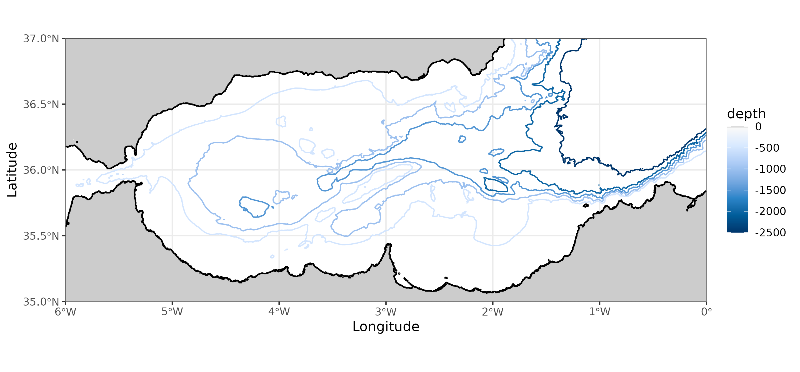
Here, scale_fill_bathy() controls the background only:
ocean cells are transparent and land cells are grey.
scale_colour_bathy() controls the isobaths. Setting
palette_land = NULL tells the colour scale that only ocean
values should be mapped, so shallow negative depths are not treated as
land colours. show.legend = FALSE in
geom_bathy() avoids displaying a second legend for the
transparent background layer.
Preparing Maps In The Pacific Antimeridian Region
A region that crosses the antimeridian is best requested explicitly. For example, the Aleutian arc spans longitudes east and west of 180 degrees.
When the data use continuous longitudes around 180 degrees, set
antimeridian = TRUE in geom_bathy(). The x
axis then remains readable, with labels expressed as east and west
longitudes.
aleutians |>
ggplot() +
geom_bathy(
aes(lon, lat, fill = depth),
antimeridian = TRUE,
expand = FALSE,
x_breaks = seq(165, 215, by = 10)
) +
geom_coastline(linewidth = 0.4) +
geom_contour(
aes(lon, lat, z = depth),
breaks = seq(0, -7000, by = -500),
colour = "grey20",
linewidth = 0.15
) +
scale_fill_bathy(
palette_ocean = "ocean_blues",
palette_land = "land_earth"
) +
theme_bw()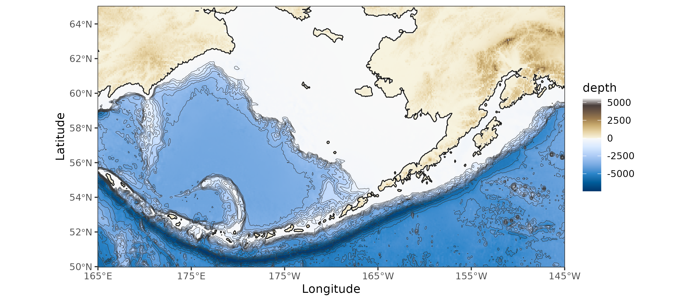
Projections
Geographic longitude/latitude grids are convenient for downloading data, but a projected coordinate reference system is often preferable for regional maps. Here, a Mediterranean grid is downloaded from NOAA, projected to ETRS89 / LAEA Europe (EPSG:3035), and plotted in one pipe.
medit |>
project_bathy(
crs_to = 3035,
) |>
ggplot() +
geom_bathy(expand = FALSE) +
geom_coastline(linewidth = 0.35) +
scale_fill_bathy(
palette_ocean = "ocean_blues",
palette_land = "land_earth"
) +
labs(x = "Easting", y = "Northing") +
theme_bw()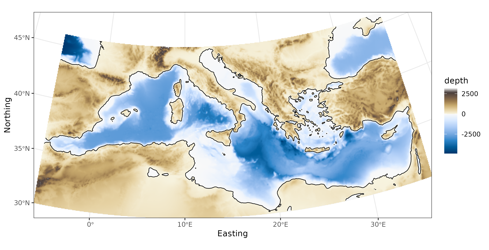
The visible grid is no longer a simple longitude/latitude rectangle: the projection and raster resampling have changed the shape of the mapped region.
Irregularly Spaced Data
Bathymetric data are sometimes available as irregularly spaced
soundings rather than as a regular grid. griddify() bins
these points into a regular grid and, optionally, fills empty cells by
inverse distance weighting.
set.seed(1)
irregular_sample <- irregular[sample(nrow(irregular), 1600), ]
hudson <- griddify(
irregular_sample,
nlon = 90,
nlat = 90,
interpolate = TRUE
)
hudson |>
ggplot() +
geom_bathy(expand = FALSE) +
geom_point(
data = irregular_sample,
aes(lon, lat),
inherit.aes = FALSE,
size = 0.25,
alpha = 0.35
) +
scale_fill_bathy(
palette_ocean = "ocean_mako",
palette_land = NULL,
mode = "rescale",
limits = c(min(hudson$depth, na.rm = TRUE), 0)
) +
theme_bw()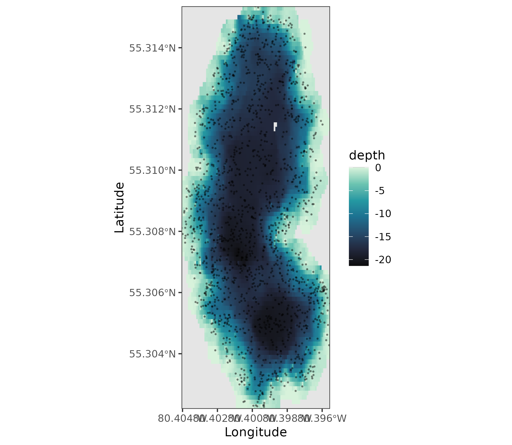
The points show the original sampling pattern. The background grid is
the regularised bathymetry returned by griddify() and can
be passed to all the same plotting and conversion functions as imported
data.
Other Spatial Formats
The default tibble format is convenient for ggplot2 and tidy workflows. Other formats are available when needed.
alboran_bathy <- tbl_to_bathy(alboran)
alboran_tbl <- bathy_to_tbl(alboran_bathy)
alboran_xyz <- as_xyz(alboran_tbl)
alboran_sf <- as_sf(alboran_tbl)
alboran_raster <- as_spatraster(alboran_tbl)
class(alboran_bathy)
[1] "bathy"
class(alboran_tbl)
[1] "tbl_df" "tbl" "data.frame"
class(alboran_xyz)
[1] "data.frame"
class(alboran_sf)
[1] "sf" "tbl_df" "tbl" "data.frame"
class(alboran_raster)
[1] "SpatRaster"
attr(,"package")
[1] "terra"Use tbl_to_bathy() when older marmap code expects a
bathy matrix. Use as_xyz() for external
software that expects a plain three-column xyz table. Use
as_sf() and as_spatraster() to work with the
wider R spatial ecosystem.